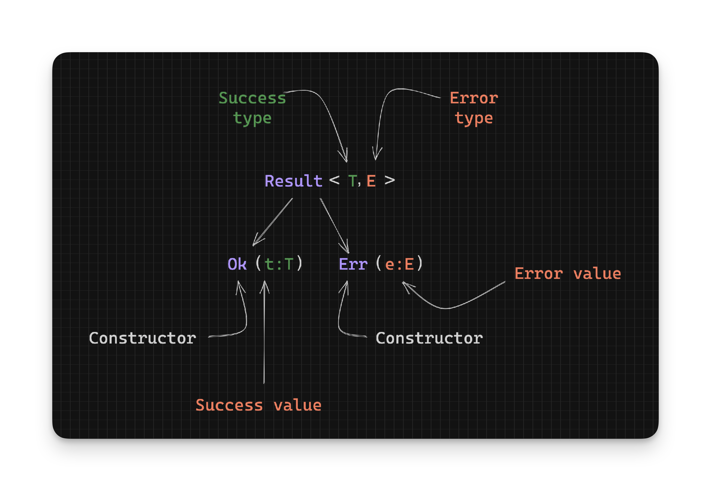

Working With Rust Result - What is a Result? - Part 1
In Rust there is a type to represent a value that maybe successful or in error. That type is called a Result and is defined as:
enum Result<T, E> {
Ok(T),
Err(E),
}You can think of Ok and Err as just wrappers around the actual values. That way if you see an Ok instance you know it has a success value wrapped “inside” it. Similarly when you get an Err instance, you know that it has an error value wrapped “inside” it. If you find this confusing, you can think of the Ok and Err constructors as “markers” indicating what the value they have is: either a success or error, respectively.
The first type variable T, represents the success type while, the second type E, represents the error type:
/// T -> Success type
/// E -> Error type
enum Result<T, E> {
Ok(T), // All good
Err(E), // Oh noes
}Because Result is an enum any value of type Result can only be one of Ok or Err; Never both.

Note: The code examples from Rust std are from version
1.77.0.
Construction
Let’s look at how to construct success and error values using Result. We mentioned that we use the Ok constructor for success values and the Err constructor
for errors. Here’s an example of using the constructors to validate that an age is twenty five:
fn twenty_five(age: u8) -> Result<u8, String> {
if age == 25 {
Ok(age)
} else {
Err(format!("{} is not 25!", age))
}
}From the above Result type:
// Given: Result<T , E>
// | |
// v v
// Return type: Result<u8, String>
// T = u8
// E = StringWe know that a u8 will be the success type (T) and a String will be the error type (E).
Note: It’s not recommended to use
Strings for error types because the compiler doesn’t help you if you forget to handle a particularString. A better alternative is to use anenumof error types. We’ll see an example of that later.
If we wanted to print the output of calls to the above function, we could do something like this:
println!("{:?}", twenty_five(5)); // Err("5 is not 25!")
println!("{:?}", twenty_five(25)); // Ok(25)
println!("{:?}", twenty_five(35)) // Err("35 is not 25!")We have used the debug syntax ({:?}) to display the value of the Result in the above example.
What if we want to actually get the success or error value “out” of a Result instead of just printing it? Let’s look at how we can shed the Result wrappers and get at the values inside.
- Continue to Extracting Values
- Back to TOC